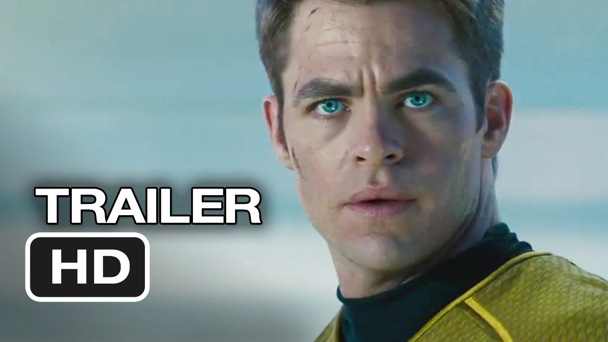
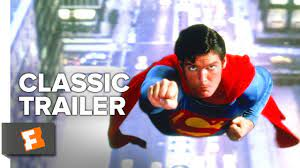
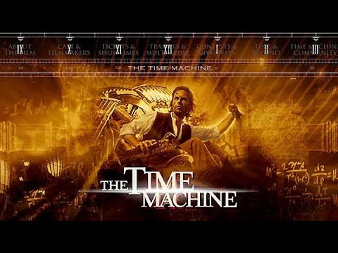
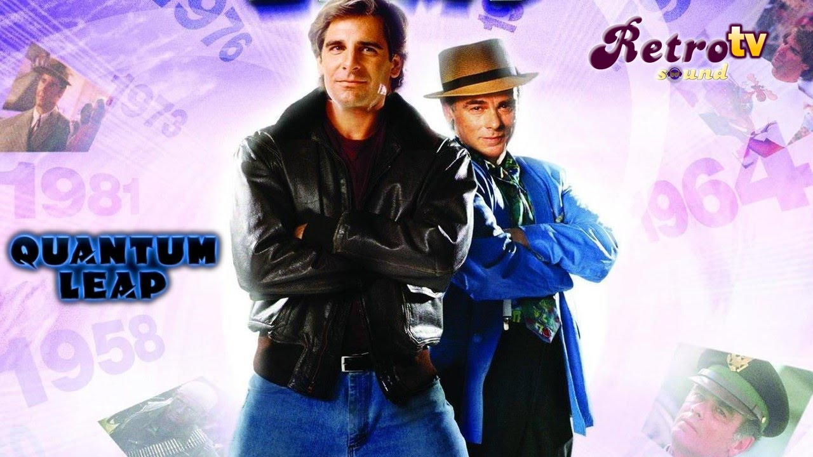

Ante todo un cristal de tiempo es, sencillamente, un cristal, por lo que es una buena idea que comencemos repasando qué es este objeto desde un punto de vista fisicoquímico.
Podemos definir un cristal como una estructura de la materia cuyos átomos se disponen de una manera homogénea y ordenada, dando forma a un patrón que se repite periódicamente a lo largo del espacio.
Son muy abundantes en la naturaleza; de hecho, las piedras preciosas, el azúcar y la sal son cristales, entre muchos otros objetos que se originan de una forma completamente natural. Sin embargo, desde un punto de vista fisicoquímico el vidrio no es un cristal debido a que, en realidad, es un objeto con una estructura atómica amorfa.
En el universo ficticio de Star Trek , el dilitio es un material inventado que sirve como agente controlador en el impulso warp más rápido que la luz .
En la serie original , los cristales de dilitio eran raros y no se podían replicar , por lo que su búsqueda era un elemento recurrente de la trama. Según una tabla periódica mostrada durante un episodio de Next Generation , tiene el número atómico 87, que en realidad pertenece al francio , y el símbolo químico Dt. [1]
En realidad, el dilitio (Li 2 ) es una molécula compuesta por dos átomos de litio unidos covalentemente que existe naturalmente en el litio gaseoso
. Aunque pueda sonar a ciencia ficción, existen iniciativas que buscan almacenar datos en vidrio.
Sí, podrían existir "pronto" los cristales de datos, una alternativa más que peculiar frente a los métodos de almacenamiento de información actuales como los CDs, DVDs, discos duros, etcétera.
Ahora, Microsoft vuelve a darle un empujón a su proyecto basado en este concepto, Project Silica, metiendo en un diminuto cristal una copia de la película de Superman de 1978.
El científico e inventor Alexander Hartdegen es uno de los individuos más respetados y venerados dentro de su rama profesional, sobre todo al hacer especial hincapié en lo consagrada que se encuentra su trayectoria tras resolver con éxito la mayor parte de los proyectos en los que participa. Ahora bien, su nuevo objetivo es mostrar al mundo que viajar en el tiempo es posible, pretendiendo con ello que las personas puedan cambiar en cierta manera el desarollo de sus vidas.
Esto se debe a la enorme tragedia que tiene que sufrir en persona. Se trata de Emma, la mujer que ama, una joven realmente entrañable que es víctima de un terrible asesinato sin poder hacer nada para evitarlo. Después del fatídico a la par que brutal homicidio, el protagonista centra todos sus esfuerzos en construir una máquina que le permita viajar en el tiempo para alterar el curso de los acontecimientos y salvar así a la chica de su destino fatal. Lo que el científico no sabe es que su travesía le llevará miles de años hacia el futuro, apareciendo de repente en un mundo post-apocalíptico que desconoce por completo.
Quantum Leap es una serie estadounidense de ciencia ficción, también conocida como A través del tiempo (en España) y Viajeros en el tiempo o El salto cuántico (en Hispanoamérica), emitida originalmente por NBC del 26 de marzo de 1989 al 5 de mayo de 1993, con un total de 96 episodios en 5 temporadas.
La trama cuenta la historia del científico cuántico Dr. Samuel Becket (Scott Bakula), quien, investigando los viajes en el tiempo, entra en una máquina que traslada su mente a distintos cuerpos en el pasado en el espacio de su vida. Como compañero de aventuras tiene a su amigo, el Almirante Albert Calavicci (Dean Stockwell), que aparece como un holograma proyectado desde el presente y que solo él puede ver y oír.
| TRAILER OFICIAL DE STAR TREK | TRAILER OFICIAL DE SUPER MAN | TRAILER OFICIAL DE MAQUINA DEL TIEMPO | TRAILER OFICIAL DE QUANTUM LEAP |
|---|---|---|---|
|  |  |  |  |
En apenas nueve años los cristales de tiempo han pasado de la imposibilidad física a la realidad práctica. Y es sorprendente que se haya producido un cambio tan brusco en tan poco tiempo. Cuando el físico teórico estadounidense, y ganador del Premio Nobel de Física en 2004, Frank Wilczek propuso su formulación teórica en 2012 buena parte de la comunidad científica se llevó las manos a la cabeza. Y tenía motivos para hacerlo.
La «ocurrencia» de Wilczek era contraria a las leyes de la física, especialmente al segundo principio de la termodinámica. Esta ley fundamental establece que la entropía de un sistema termodinámico aislado siempre se incrementa con el transcurso del tiempo hasta alcanzar un estado de equilibrio termodinámico en el que la entropía es máxima.
| INTERROGANTES | INFORMACION | Direccion |
|---|---|---|
| QUE SON? | Cristal de espacio tiempo es un sistema abierto no equilibrado con su entorno que exhibe la simetría de traslación de tiempo rota | Sitio Web |
| GRAN LOGRO CIENTIFICO | Científicos de la Universidad de Granada (España) y de la de Tübingen (Alemania) han descubierto una forma de crear cristales de tiempo. Se trata de una nueva fase de la materia que emula una estructura cristalina en la cuarta dimensión, el tiempo, en lugar de solo en el espacio, a partir de fluctuaciones extremas en sistemas físicos de muchas partículas | Sitio Web |
| COMO FUNCIONAN? | Los cristales temporales, un nuevo concepto propuesto en 2012, son un estado de la materia cuyos patrones se repiten en el tiempo en vez de en el espacio. Estos sistemas muestran una ruptura espontánea de la simetría bajo traslaciones temporales. | Sitio Web |
| PREMIO NOVEL | Los cristales de tiempo son un nuevo estado de la materia propuesto recientemente por el premio Nobel de física Frank Wilczek, del Massachusetts Institute of Technology (MIT), en Estados Unidos. | Sitio Web |